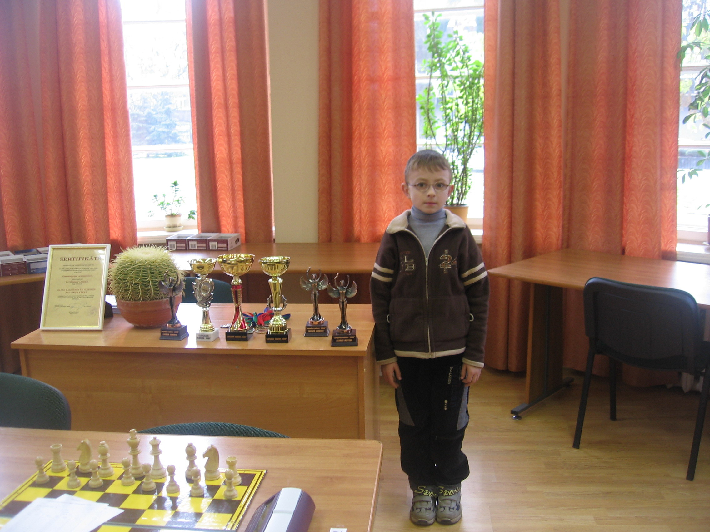

Ссылочка
vb vbvbcbb
Каким бы талантливым шахматист не был, если он самостоятельно не может и не приучен заниматься, то далеко не уедет.

-Французы бросились наутек, не выдержав духа русской армии.
-Первые успехи Пьера Безухова в любви были плохие — он сразу женился.
-Когда бомбы стали разрываться в гуще солдат, Пьеру неожиданно открылся внутренний мир простых русских людей.
-Когда Чацкий узнал, что Софья в стане его врагов, он начал бить её метким словом.
-Онегин, как и все помещики, родился не в роддоме, а на брегах Невы.
-Дружба Онегина и Ленского неискренняя, лживая и подлинная.
-Комната Раскольникова была похожа на гроб с желтыми обоями. .
-И тогда Раскольников вопрошает: «Тварь я ходячая или кто?»
-Проблема романа «Преступление и наказание» основана практически в одной фразе, сказанной Раскольниковым: «Тля я или право имею?»
-Достоевский писал роман в минуты глубокого духовного разложения.
-По тогдашней моде Коробочка чесала мужу пятки, а себе пудрила мозги.
-Чичиков отличается приятной внешностью, но неприятной внутренностью.
-Обломов Ольгу любил, но не испытывал к ней никаких чувств.
-Базаров, как игла в стоге сена, идет против течения.
-Базаров поранил палец и умер. Это значит: не лезь в чужой труп, а то свой потеряешь.
-Герасим лишен нормативной речи.
-Герасим подошел к Муму и погладил ее лобастый затылок.
-Пугачев пожаловал шубу и лошадь со своего плеча.
-Швабрин поднял свечу и на стенах комнаты увидел страшные морды клопов.
-Поражают его карие глаза, которые не смеются даже тогда, когда смеются его другие части тела.
-«Кабаниха» означает в переводе «дикая свинья».
-Она открыта и искренна, но ведь все мы не без плохих черт.
-Она хотела найти себе место по душе и нашла его только в гробу.
Вокруг нас свободные места начинают заполняться студентами, они даже с флагом университета,
по-моему, технического. Молодые люди не очень разбираются в биатлоне,
но, судя по их веселым лицам, пары прогуливают с удовольствием.
Студентов, кстати, в дни гонок и на трассе, и на стадионе было много.
Вот только перед тем, как вести их на соревнования, да еще и такого уровня, можно было хоть «правила игры» объяснить.
Идет женская эстафета, первый этап. Рядом два молодых человека делятся впечатлениями:
- Ну вот, постреляет она, а дальше? – спрашивает один.
- Откуда я знаю, побежит, наверное, - отвечает другой.
- А сколько раз они стрелять будут?
- Да откуда я знаю!
Ссылочка